1
258
Try it out!
I built a tool that extracts daily content using the Reddit API to calculate sentiment scores about the Reddit community's views on leading tech companies such as Apple, Microsoft, Alphabet, Amazon, Nvidia, Tesla, Meta.
1
258
Try it out!
I built a tool that extracts daily content using the Reddit API to calculate sentiment scores about the Reddit community's views on leading tech companies such as Apple, Microsoft, Alphabet, Amazon, Nvidia, Tesla, Meta.
2
999
3
456
Step 1: Extracting Relevant Subreddits Using Keyword Filtering
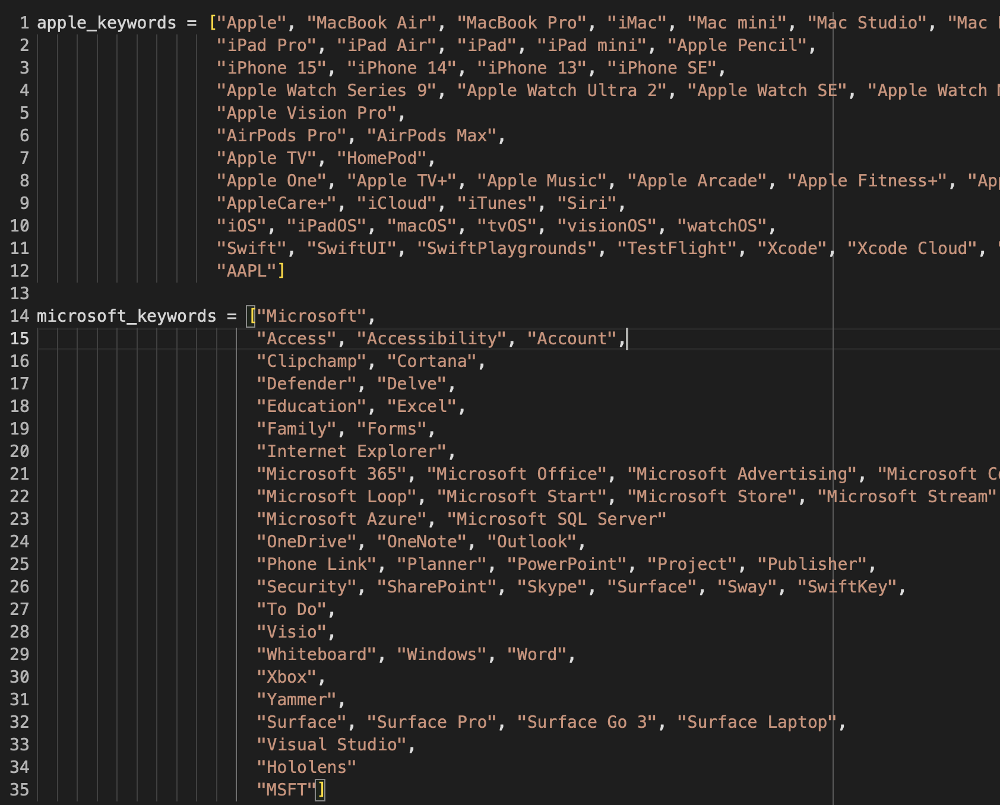You can search for a list of subreddits that include a specific word in the subreddit's name or description, and the Reddit API will give you a list of subreddits that match this criteria. As a first attempt at filtering out subreddits related to the parent companies, I wrote a function that filtered the relevant subreddits for each parent company based on how many of the keywords in that parent company's keywords list were contained in the name and description of the subreddit.
4
309
Not Enough Filtering
This technique filters what might be seen as a substantial amount of subreddits (the resulting list of subreddits about 1/3 the original subreddit count). However, a lot of unrelated subreddits slipped through the cracks. For example, if I set my function to filter the subreddits based on whether one keyword in the keyword list matches its title/description, I will get a lot of unrelated subreddits such as "appletrees" for Apple. If I set the function to match on more keywords, the search criteria is too narrow and almost none of the subreddits will match.
5
786
Step 2: Creating Training Dataset of Subreddit Descriptions
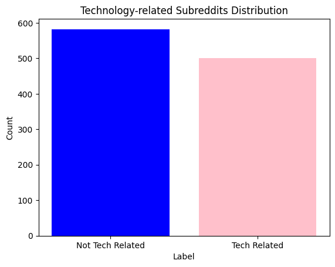I needed to train a binary topic classifier to determine whether a given subreddit is associated with a particular technology company/stock. I curated a training dataset by labeling around a 1,000 subreddit title and descriptions with either a "1" or "0", where "1" meant that the subreddit was technology related and "0" meant it wasn't. This dataset can be found at gulnuravci/subreddit_technology_classification on the Hugging Face platform.
6
875
Step 3: Fine Tuning Text Classification Model
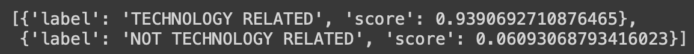Fine-tuning a model means to train an existing model on additional data to make it work for your needs. In my case, I was able to load a pretrained text classification model distilbert/distilbert-base-uncased from Hugging Face and fine-tune it on my labeled subreddits.
7
424
Model accuracy
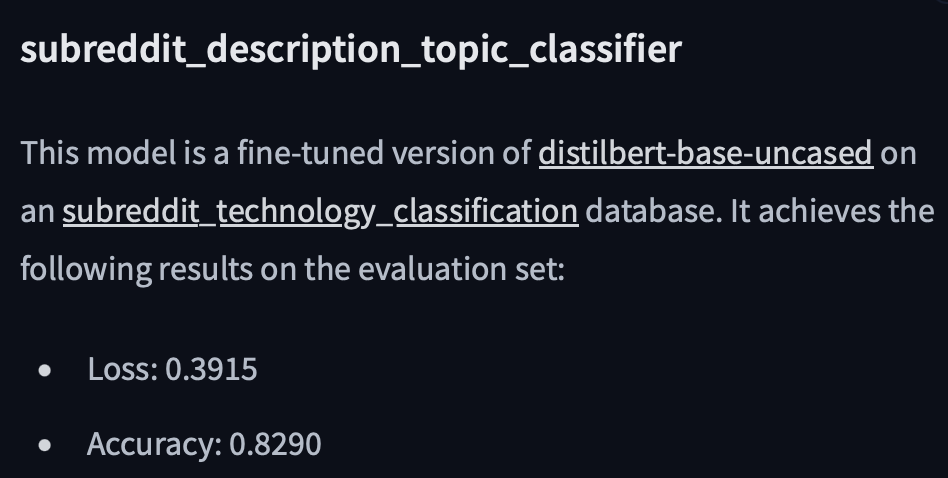My fine-tuned distilBERT model on the labeled subreddit data can be found at gulnuravci/subreddit_description_topic_classifier on the Hugging Face platform. There is a point to be made about the accuracy being at about 83%, but considering the anticipated large sample size that will be evaulated using this model, any potential errors in classification are expected to be overshadowed by the sheer volume of data points.
8
176
Step 4: Extract Relevant Subreddits For Each Parent Company
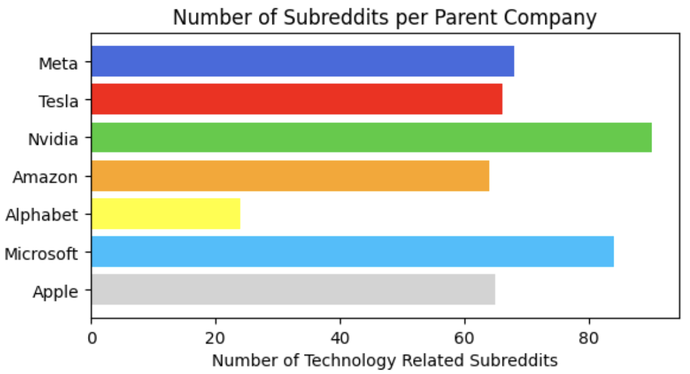For each of the parent companies (and their main subsidaries), I would first extract subreddits for each of them using the keyword filtering technique. Then, I'd pass those subreddits through the fine-tuned subreddit topic classifier to determine if they were technology related and if they should be included in the analysis.
9
346
Step 5: Extract Posts From Subreddits
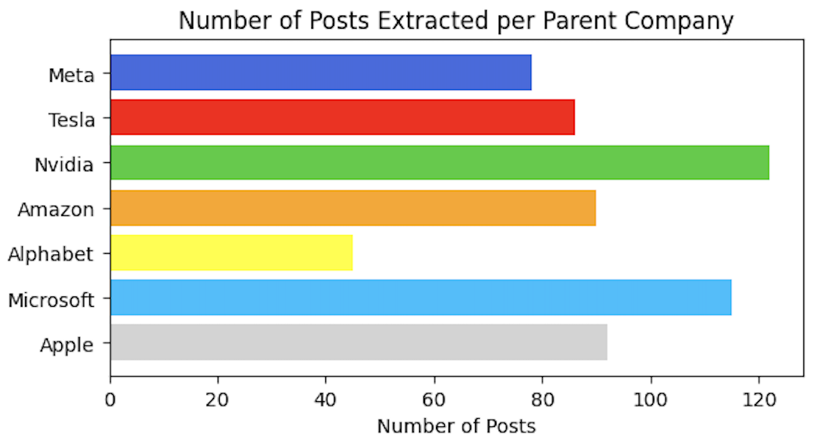From each subreddit, I extracted a certain number of posts. You can filter the posts based on many criteria. Since I'm looking at daily sentiment analysis, I decided to extract posts "best" posts made "today". According to your needs, you can also use other filters such as "top", "controversial", or "hot".
10
672
Step 6: Extract Comments From Posts
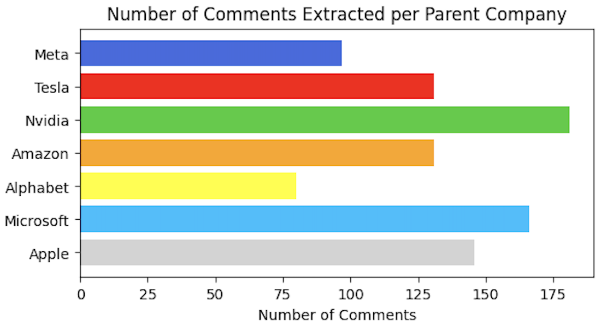From each post, I extracted a certain number of comments. Similarly, I filtered the comments using the "best" filter, but you can use other filters.
11
490
Step 7: Experimenting With Different Sentiment Analysis Models
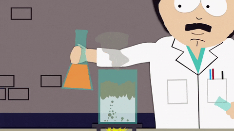This project was initially intended to be financial sentiment analysis, where I wanted to specifically examine financial sentiment on Reddit regarding these companies (think of what happened with GameStop stocks).
12
459
Upvote ratio

For those who are not familiar with Reddit, the upvote ratio (the number you see on the left of this text) is the ratio of upvotes/downvotes for that post. For example, if a post gets 10 upvotes and 3 downvotes, its upvote ratio would be 7.
12
234
How I Calculated Sentiment
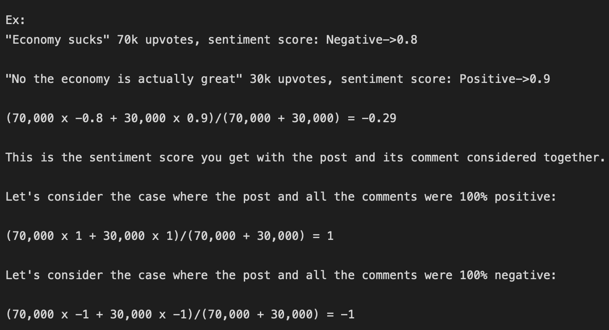To recap, there are relevant subreddits for each parent company, a number of posts extracted for each subreddit, and a number of comments extracted for each post. In my sentiment calculation, I related the sentiment of each individual posts along with its comments in the following manner.
Firstly, text classification models often give you a a percentage score between 0 and 1 in the categories it is classifying under. So let's say a classification model is classifying whether a text is positive, negative, or neutral. It gives you a percentage score between 0 and 1 for each category, and the one with the highest percentage is often what you take as the guess of the model. For example, the statement "I love you" could have a positive sentiment score of 0.99, negative sentiment score of 0.01, and neutral sentiment score of 0.0. You would take the highest sentiment score as the classification for that text.
There is nuance in these scores. A post with 10,000 upvote ratio vs. a post with 100 upvote ratio should be included in the average sentiment accordingly. So for each post and comment group, I get a sentiment score for each entry. If the text is classified as positive, I take the sentiment percentage as a positive (+) number, whereas if its classified as negative, I take the sentiment percentage as a negative (-) number. If the text is classified as neutral, regardless of what the sentiment percentage is, I take the the score as zero (0). I multiply each sentiment score by the interactions (aka upvote ratio) for that entry, sum up these values for the posts and its comments, and divide it by the total interactions for the entries in that post/comment group. This gives a singular average sentiment score for that group.
The sign of the average score determines if that interaction was considered positive or negative, and its magnitude determines how postive/negative it was. Neutral scores don't contribute to the sentiment score, but the interactions on the neutral entry do. For example, if there is a post that has severe negative sentiment but a comment that is classified neutral gets a lot of upvotes, the average sentiment for that interaction might be in the negative direction but it's magnitude will be diminished by the amount of interactions the neutral entry received.
13
841

Average Sentiment Per Parent Company
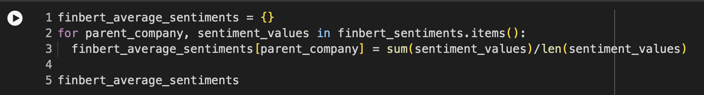Calculating the average sentiment of each company was elementary, you simply sum up all the individual average sentiments found amongst groups of post and their comments, and divide it by the number of groups there are for that company.
14
787
FinBERT (Financial Sentiment Analysis Model)
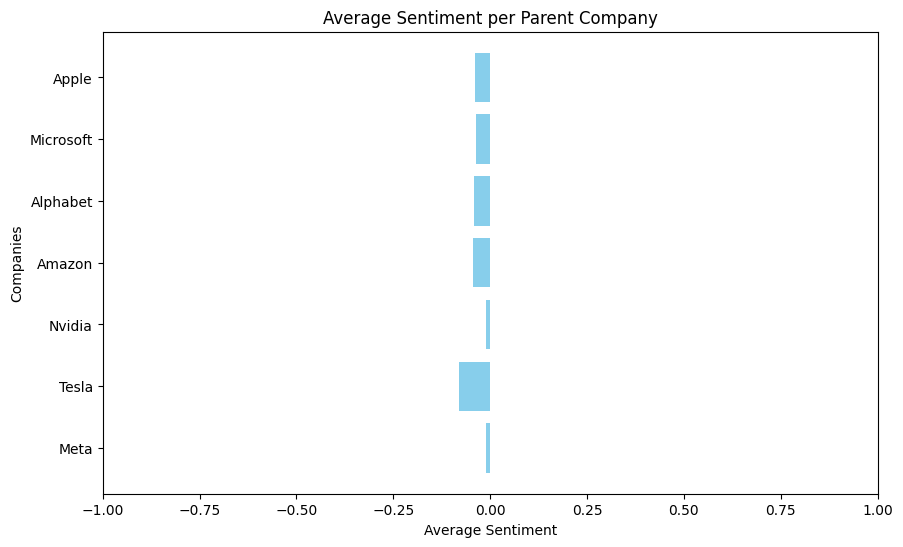ProsusAI/finbert is a pre-trained NLP (natural language processing) model to analyze sentiment of financial text. Since financial sentiment analysis was the initial intention of my project, I ran the posts and comments through this model and resulted with the average sentiments shown above.
15
934
Too Many Neutral Classifications
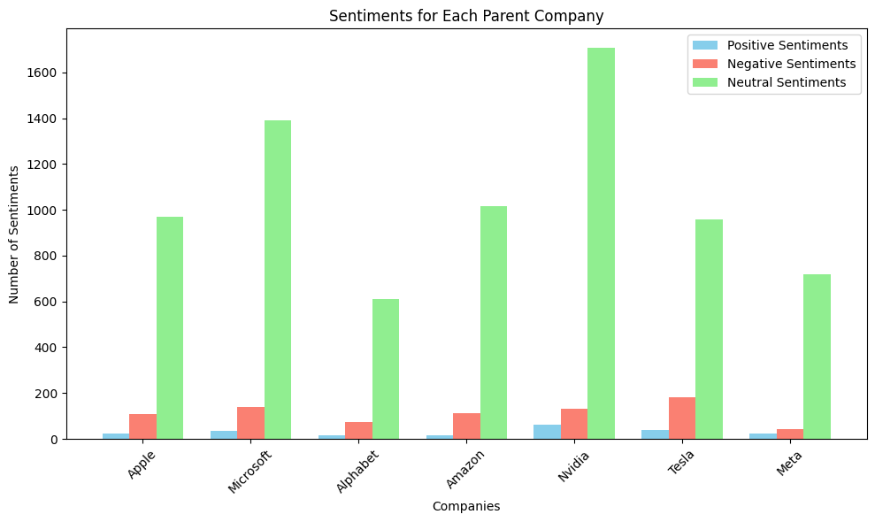The classifications were overwhelmingly neutral to the point where there were a handful of positive/negative classifications among a 1,000 posts and comments. This is why the financial sentiment analysis model was ruled out for this project, since saying all the posts are neutral doesn't give us much insight into people's opinions. This did reveal that people don't talk in an overwhelmingly financial tone even on technology related subreddits, which was interesting to see.
16
395
Default [DistilBERT] Sentiment Analysis Model Without Neutral (Didn't Work Well)
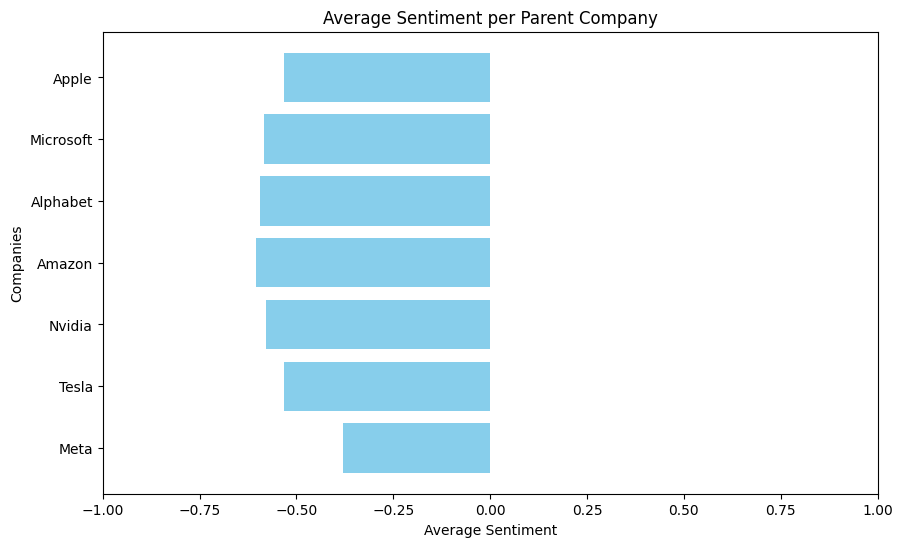I was tempted to use the default text classification model on Hugging Face, distilbert/distilbert-base-uncased-finetuned-sst-2-english. The catch was that this model does not have a neutral classification, only positive and negative. The resulting average sentiments are shown above.
17
243
Too Many Negative Classifications

There were an overwhelming amount of negative classifications, and I had initially came to three conclusions in light of these results:
18
738
Winner: DistilBERT Sentiment Analysis with Neutral Classification
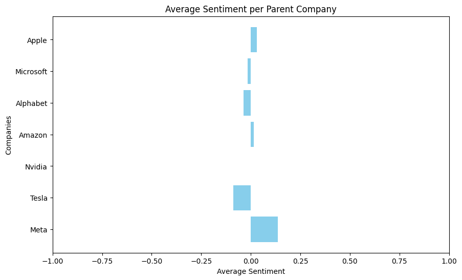Both the previous model and this one - lxyuan/distilbert-base-multilingual-cased-sentiments-student are DistilBERT based, which is a small, fast, cheap and light Transformer model trained by distilling BERT base of Google's BERT. The resulting average sentiments are shown above.
19
657
Good Distribution of Positive and Negative Sentiments
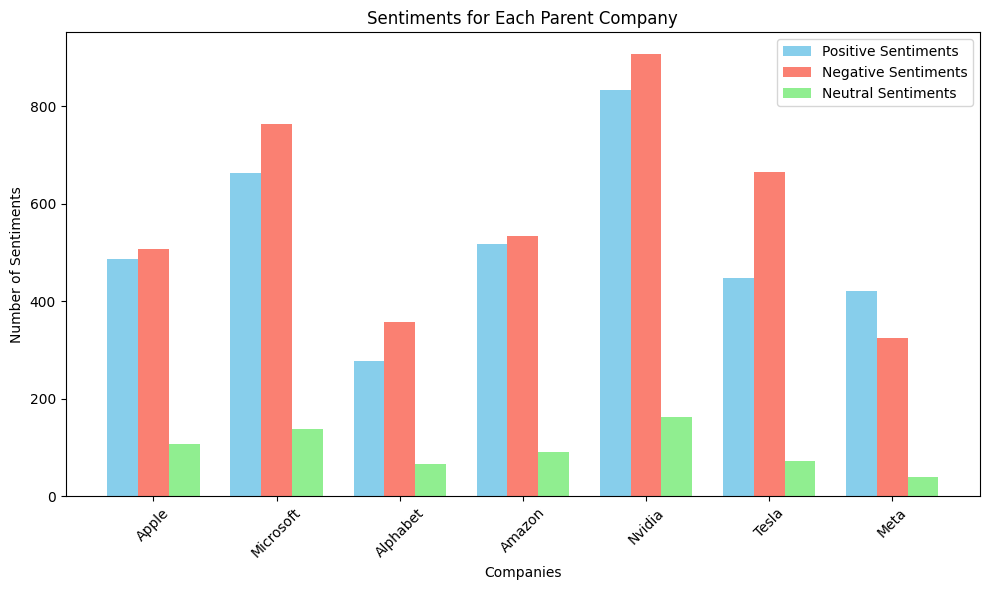This model resulted in a much better distribution of sentiments, where there were similar amounts of positive and negative sentiments, and much less neutral sentiments than before. These results were more aligned with what one would expect to see, so I decided to use this as the sentiment analysis model for this project.
20
938
Step 8: Deploy Sentiment Analysis Tool on Hugging Face
The last step was to combine the Google Colab research code in a digestable manner and deploy it as a tool that can be used by the public.
Reddit now sells the usage of their API to companies to do AI research, so you either have to obtain proper permissions to do a lot of requests, or the API will slow down your calls to not exceed the limit. This is why the number of posts per subreddit and comments per post, while being an adjustable parameter, should remain reasonable or the user will have to wait an excessive amount of time for results and the program might time out on them with random "Access denied" errors.
I set it up so that when a user requests the plots for today, if the request was within 24 hours of the last extraction of data, it returns the plots based on those results. If it has been more than 24 hours, the user's request can take atleast 30 mins based on the number of posts/comments being requested. If you are using the tool for research purposes, I'd say just set the tab aside after your request and just wait for it to finish because even if it takes a long time the request does come to completion eventually. If you are not the first user to make a request that day, you will get your results in seconds.
One last thing, daily results will be stored in a dataset at gulnuravci/reddit_sentiment_analysis_results on the Hugging Face platform, so additional research can be done on how Reddit users' sentiment changed with market movements.
21
938
THANK YOU FOR READING

:D